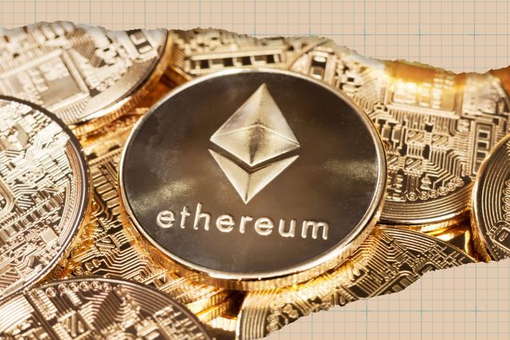
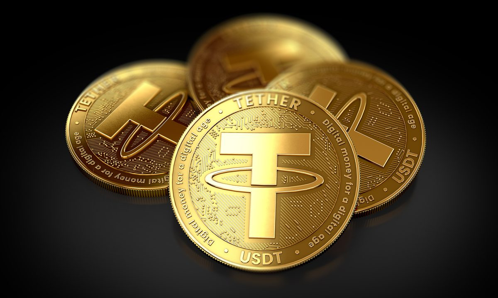
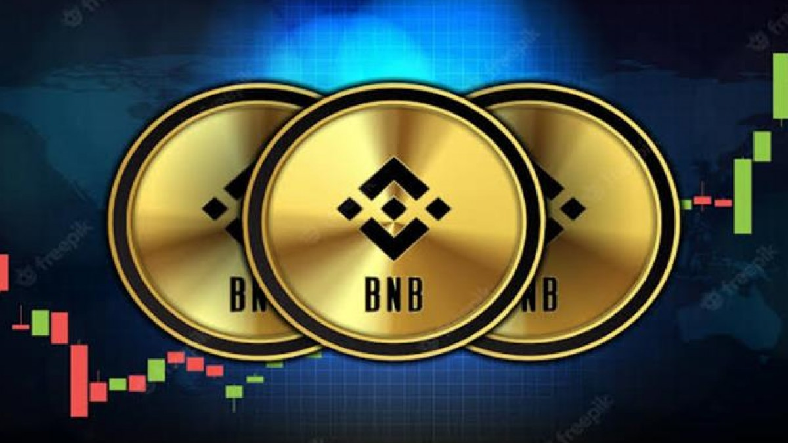
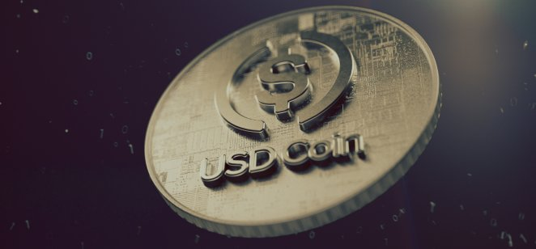
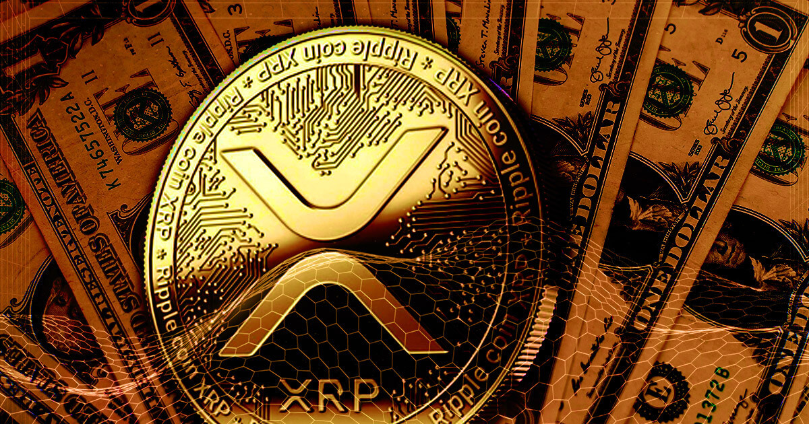
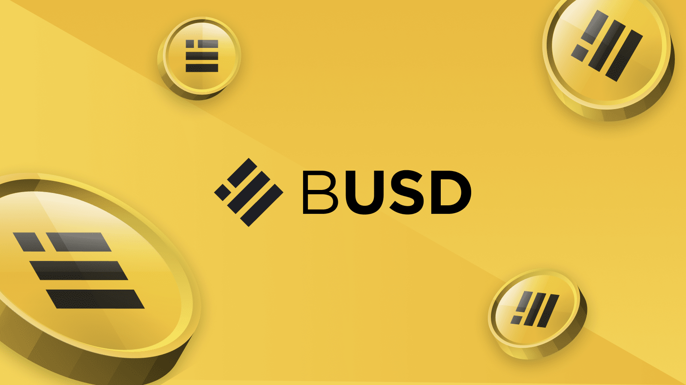
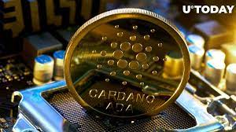

THE VARIOUS CRYPTO CURRENCIES OUT THERE

What Is Cryptocurrency?
A cryptocurrency is a digital or virtual currency that is secured by cryptography, which makes it nearly impossible to counterfeit or double-spend. Many cryptocurrencies are decentralized networks based on blockchain technology—a distributed ledger enforced by a disparate network of computers.
A defining feature of cryptocurrencies is that they are generally not issued by any central authority, rendering them theoretically immune to government interference or manipulation.
KEY TAKEAWAYS
A cryptocurrency is a form of digital asset based on a network that is distributed across a large number of computers. This decentralized structure allows them to exist outside the control of governments and central authorities.
Some experts believe that blockchain and related technology will disrupt many industries, including finance and law.
The advantages of cryptocurrencies include cheaper and faster money transfers and decentralized systems that do not collapse at a single point of failure.
The disadvantages of cryptocurrencies include their price volatility, high energy consumption for mining activities, and use in criminal activities.
Cryptocurrencies are digital or virtual currencies underpinned by cryptographic systems. They enable secure online payments without the use of third-party intermediaries. "Crypto" refers to the various encryption algorithms and cryptographic techniques that safeguard these entries, such as elliptical curve encryption, public-private key pairs, and hashing functions.
Cryptocurrencies can be mined or purchased from cryptocurrency exchanges. Not all e-commerce sites allow purchases using cryptocurrencies. In fact, cryptocurrencies, even popular ones like Bitcoin, are hardly used for retail transactions. However, the skyrocketing value of cryptocurrencies has made them popular as trading instruments. To a limited extent, they are also used for cross-border transfers.
TYPES OF CRYPTOCURRENCIES
BITCOIN

Bitcoin is a decentralized digital currency that can be transferred on the peer-to-peer bitcoin network. Bitcoin transactions are verified by network nodes through cryptography and recorded in a public distributed ledger called a blockchain
The domain name bitcoin.org was registered on 18 August 2008.On 31 October 2008, a link to a paper authored by Satoshi Nakamoto titled Bitcoin: A Peer-to-Peer Electronic Cash System was posted to a cryptography mailing list. Nakamoto implemented the bitcoin software as open-source code and released it in January 2009.Nakamoto's identity remains unknown.
On 3 January 2009, the bitcoin network was created when Nakamoto mined the starting block of the chain, known as the genesis block. Embedded in the coinbase of this block was the text "The Times 03/Jan/2009 Chancellor on brink of second bailout for banks". This note references a headline published by The Times and has been interpreted as both a timestamp and a comment on the instability caused by fractional-reserve banking.[
The receiver of the first bitcoin transaction was Hal Finney, who had created the first reusable proof-of-work system (RPoW) in 2004 Finney downloaded the bitcoin software on its release date, and on 12 January 2009 received ten bitcoins from Nakamoto Other early cypherpunk supporters were creators of bitcoin predecessors: Wei Dai, creator of b-money, and Nick Szabo, creator of bit gold. In 2010, the first known commercial transaction using bitcoin occurred when programmer Laszlo Hanyecz bought two Papa John's pizzas for ₿10,000 from Jeremy Sturdivant.
Blockchain analysts estimate that Nakamoto had mined about one million bitcoins before disappearing in 2010 when he handed the network alert key and control of the code repository over to Gavin Andresen. Andresen later became lead developer at the Bitcoin Foundation.Andresen then sought to decentralize control. This left opportunity for controversy to develop over the future development path of bitcoin, in contrast to the perceived authority of Nakamoto's contributions.
ETHEREUM

Ethereum is a decentralized, open-source blockchain with smart contract functionality. Ether is the native cryptocurrency of the platform. Among cryptocurrencies, ether is second only to bitcoin in market capitalization. Ethereum was conceived in 2013 by programmer Vitalik Buterin
Additional founders of Ethereum included Gavin Wood, Charles Hoskinson, Anthony Di Iorio and Joseph Lubin. In 2014, development work began and was crowdfunded, and the network went live on 30 July 2015. Ethereum allows anyone to deploy permanent and immutable decentralized applications onto it, with which users can interact.Decentralized finance (DeFi) applications provide a broad array of financial services without the need for typical financial intermediaries like brokerages, exchanges, or banks, such as allowing cryptocurrency users to borrow against their holdings or lend them out for interest.Ethereum also allows users to create and exchange NFTs, which are unique tokens representing ownership of an associated asset or privilege, as recognized by any number of institutions. Additionally, many other cryptocurrencies utilize the ERC-20 token standard on top of the Ethereum blockchain and have utilized the platform for initial coin offerings.
On 15 September 2022, Ethereum transitioned its consensus mechanism from proof-of-work (PoW) to proof-of-stake (PoS) in an upgrade process known as "the Merge".
TETHER USDT

Tether, is an asset-backed cryptocurrency stablecoin. It was launched by the company Tether Limited Inc. in 2014. Tether Limited is owned by the Hong Kong-based company iFinex Inc., which also owns the Bitfinex cryptocurrency exchange.
In 2012, J.R. Willett published a whitepaper which described the possibility of building new cryptocurrencies on top of the Bitcoin blockchain. Willett went on to help implement this idea in the cryptocurrency Mastercoin, which had an associated Mastercoin Foundation (later renamed the Omni Foundation to promote the use of this new "second layer". The Mastercoin protocol became the technological foundation of the Tether cryptocurrency, and one of the original members of Mastercoin Foundation. Brock Pierce, became a co-founder of Tether.[citation needed] and Tether founder, Craig Sellars, became the CTO of the Mastercoin Foundation.[citation needed]
The precursor to Tether, originally named "Realcoin", was announced in July 2014 by co-founders Brock Pierce, Reeve Collins, and Craig Sellars as a Santa Monica based startup. The first tokens were issued on 6 October 2014, on the Bitcoin blockchain This was done by using the Omni Layer Protocol. On 20 November 2014, Tether CEO Reeve Collins announced the project was being renamed to "Tether".[citation needed] The company also announced it was entering private beta, which supported a "Tether+ token" for three currencies: USTether (US+) for United States dollars, EuroTether (EU+) for euros and YenTether (JP+) for Japanese yen. Tether said "Every Tether+ token is backed 100% by its original currency, and can be redeemed at any time with no exposure to exchange risk." The company's website states that it is incorporated in Hong Kong with offices in Switzerland, without giving details.
BNB

Binance is a cryptocurrency exchange which is the largest exchange in the world in terms of daily trading volume of cryptocurrencies.It was founded in 2017 and is registered in the Cayman Islands.
Binance was founded by Changpeng Zhao, a developer who had previously created high frequency trading software. Binance was initially based in China, but later moved its headquarters out of China following the Chinese government's increasing regulation of cryptocurrency.
In 2021, Binance was put under investigation by both the United States Department of Justice and Internal Revenue Service on allegations of money laundering and tax offenses.The UK's Financial Conduct Authority ordered Binance to stop all regulated activity in the United Kingdom in June 2021.
In 2021, Binance shared client data, including names and addresses, with the Russian government.
USD COIN (USDC)

USD Coin is a digital stablecoin pegged to the United States dollar. USD Coin is managed by a consortium called Centre, which was founded by Circle and includes members from the cryptocurrency exchange Coinbase and Bitcoin mining company Bitmain, an investor in Circle.USDC is issued by a private entity and should not be confused with a central bank digital currency (CBDC).USDC was first announced on 15 May 2018 by Circle,and was launched in September 2018.
On March 29, 2021, Visa announced that it would allow the use of USDC to settle transactions on its payment network.
As of July 2022, Circle states that there are 55 billion USDC in circulation.
XRP(Ripple)

Ripple is a real-time gross settlement system, currency exchange and remittance network created by Ripple Labs Inc., a US-based technology company. Released in 2012, Ripple is built upon a distributed open source protocol, and supports tokens representing fiat currency, cryptocurrency, commodities, or other units of value such as frequent flier miles or mobile minutes. Ripple purports to enable "secure, instantly and nearly free global financial transactions of any size with no chargebacks". The ledger employs the native cryptocurrency known as XRP.
In December 2020, Ripple Labs and two of its executives were sued by the U.S. Securities and Exchange Commission (SEC) for selling XRP tokens, which the SEC classified as unregistered securities.Ripple was conceived by Jed McCaleb and built by Arthur Britto and David Schwartz who then approached Ryan Fugger who had debuted in 2005 as a financial service to provide secure payment options to members of an online community via a global network Fugger had developed a system called OpenCoin which would transform into Ripple. The company also created its own form of digital currency referred to as XRP to allow financial institutions to transfer money with negligible fees and wait-time. In 2013, the company reported interest from banks for using its payment system.
By 2018, over 100 banks had signed up, but most of them were only using Ripple's XCurrent messaging technology, while avoiding the XRP cryptocurrency due to its volatility problems.[10] Representatives of the Society for Worldwide Interbank Financial Telecommunication (SWIFT), whose market dominance is being challenged by Ripple, have argued that the scalability issues of Ripple and other blockchain solutions remain unsolved, confining them to bilateral and intra-bank applications. A Ripple executive acknowledged in 2018 that "We started out with your classic blockchain, which we love. But the feedback from the banks is you can’t put the whole world on a blockchain."
Ripple relies on a common shared ledger, which is a distributed database storing information about all Ripple accounts. Chris Larsen told the Stanford Graduate School of Business that the network was managed by a network of independent servers which compare their transaction records, and that servers could in theory belong to anyone, including banks or market makers. Ripple validates accounts and balances instantly for payment transmission and delivers payment notification within a few seconds. Payments are irreversible, and there are no chargebacks.
Ripple Labs continued as the primary contributors of code to the consensus verification system behind Ripple. In 2014, the protocol gained access to the US banking system amid concerns over security and a lack of regulation.
Binance USD

Binance is a cryptocurrency exchange which is the largest exchange in the world in terms of daily trading volume of cryptocurrencies. It was founded in 2017 and is registered in the Cayman Islands.
Binance was founded by Changpeng Zhao, a developer who had previously created high frequency trading software. Binance was initially based in China, but later moved its headquarters out of China following the Chinese government's increasing regulation of cryptocurrency.
In 2021, Binance was put under investigation by both the United States Department of Justice and Internal Revenue Service on allegations of money laundering and tax offenses. The UK's Financial Conduct Authority ordered Binance to stop all regulated activity in the United Kingdom in June 2021.CEO Changpeng Zhao had previously founded Fusion Systems in 2005 in Shanghai; the company built high-frequency trading systems for stockbrokers. In 2013, he joined Blockchain.info as the third member of the cryptocurrency wallet's team. He also worked at OKCoin as CTO for less than a year, a platform for spot trading between fiat and digital assets.
The company was founded in China but moved its servers and headquarters out of China and into Japan in advance of the Chinese government ban on cryptocurrency trading in September 2017.
In January 2018 it was the largest cryptocurrency exchange with a market capitalization of $1.3 billion,a title it has retained as of April 2021, despite competition from Coinbase, among others.
In March 2018, Binance announced its intentions to open an office in Malta after stricter regulations in Japan and China. In April 2018, Binance signed a memorandum of understanding with the government of Bermuda. Months later, a similar memorandum was signed with the Malta Stock Exchange to develop a platform for trading security tokens. In 2019, company announced Binance Jersey, an independent entity from its parent Binance.com exchange, with the aim to expand its European influence. Jersey based exchange offers fiat-to-cryptocurrency pairs, including the Euro and the British pound.
In August 2018, Binance along with three other big exchanges raised $32 million for a stablecoin project. The idea of stable coins is to provide a cryptocurrency without the notorious volatility of Bitcoin and other popular digital assets.
In January 2019, Binance announced that it had partnered with Israel-based payment processor Simplex to enable cryptocurrency purchases with debit and credit cards, including Visa and Mastercard. The purchases are subject to Simplex's local bank policies and are limited to Bitcoin, Ethereum, Litecoin and Ripple's XRP.
On 7 May 2019, Binance revealed that it had been the victim of a "large scale security breach" in which hackers had stolen 7,000 Bitcoin worth around U.S.$40 million at the time. Binance CEO Changpeng Zhao said the hackers "used a variety of techniques, including phishing, viruses and other attacks" and structured their transaction "in a way that passed our existing security checks. Binance halted further withdrawals and deposits but allowed trading to continue. The site pledged to reimburse customers through its "Secure Asset Fund for Users (SAFU)" Withdrawals resumed by 19 May.[better source needed]
In September 2019, the exchange began offering perpetual futures contracts, allowing leverage as high as 125 times the value of the contracts. In November 2019, Binance announced it was acquiring Indian bitcoin exchange WazirX, which became disputed in August 2022 when Binance founder Zhao claimed the deal was never signed.
On 21 February 2020, the Malta Financial Services Authority (MFSA) issued a public statement responding to media reports referring to Binance as a 'Malta-based' cryptocurrency company. The statement noted that Binance "is not authorized by the MFSA to operate in the cryptocurrency sphere and is therefore not subject to regulatory oversight by the MFSA." The MFSA added that it was "assessing if Binance has any activities in Malta which may not fall within the realm of regulatory oversight."
In March 2020, Binance acquired CoinMarketCap.[citation needed]
On 28 October 2020, Forbes staff released leaked documents showing that Binance and Changpeng Zhao created an elaborate corporate structure designed to intentionally deceive United States regulators and secretly profit from cryptocurrency investors located in the country. Binance officially blocks access from IP addresses located in the United States, but "potential customers would be taught how to evade geographic restrictions", Forbes claimed.
In May 2021 it was reported that Binance was under investigation by both the Internal Revenue Service and the United States Department of Justice on allegations of money laundering and tax offenses.
In February 2022, Binance took a $200m stake in Forbes.In March 2022, amidst the 2022 Russian invasion of Ukraine, Binance's CEO Changpeng Zhao, refused to ban users from Russia, citing "financial freedom.".Binance later softened their opposition to this measure, and also pointed to their donation of $10 million for humanitarian needs in Ukraine.
In April 2022, Reuters reported that, in 2021, Binance shared information with Rosfinmonitoring about funds raised by jailed Russian opposition leader Alexei Navalny's network.
On 27 May 2022, Binance announced the registration of its legal entity in Italy, and has plans of opening offices and expanding the local team in the area. CEO Changpeng Zhao also shared information regarding Binance's registration with France's market regulator. The company is also seeking registration in more European countries, such as Switzerland, Sweden, Spain, Netherlands, Portugal and Austria.
On 13 June 2022 Binance announced that (for an unspecified time period) users would be unable to withdraw their funds held in Bitcoin, amid the background of major falls in the value of cryptocurrencies.2 hours after the announcing the temporarily suspension of bitcoin withdrawals, Bitcoin withdrawals were resumed.[better source needed]
Binance has a strong brand presence in Africa. Binance sponsored the Africa Cup of Nations in 2021.It is also taking crypto education to many countries on the continent.
Binance invested US$500 million towards the acquisition of Twitter by Elon Musk that completed in October 2022. Following the investment, the company announced the creation of a team to work on how blockchain and cryptocurrencies could be helpful to Twitter.
CARDANO (ADA)

Cardano is a public blockchain platform. It is open-source and decentralized, with consensus achieved using proof of stake. It can facilitate peer-to-peer transactions with its internal cryptocurrency, ADA. Cardano was founded in 2015 by Ethereum co-founder Charles Hoskinson.The development of the project is overseen and supervised by the Cardano Foundation based in Zug, Switzerland. It is the largest cryptocurrency to use a proof-of-stake blockchain, which is seen as a greener alternative to proof-of-work protocols.Cardano was funded through an initial coin offering (ICO). The currency debuted with a market cap of $600 million. By the end of 2017, it had a market cap of $10 billion, and reached a value of $33 billion briefly in 2018 before a general tightening of the crypto market dropped its value back to $10 billion. Cardano reached a market cap of $77 billion in May 2021 and solidified its position as the biggest proof-of-stake cryptocurrency.
IOHK has partnered with universities for blockchain research. In 2017, IOHK helped the University of Edinburgh launch the Blockchain Technology Laboratory.In 2020, IOHK donated $500,000 in Ada to the University of Wyoming to support the development of blockchain technology. Cardano has taken 26th place in the ranking of the top companies in terms of brand intimacy 2022 by MLBM, The highest rank in cryptocurrency industry.
CURRENT PRICE OF THE ABOVE COINS
-
Bitcoin (BTC) Price: $20,100.
-
Ethereum (ETH) Price: $1,476.
-
Tether (USDT) Price: $1.00.
-
BNB (BNB) Price: $286.77.
-
USD Coin (USDC) Price: $1.00
-
XRP (XRP) Price: $0.4626.
-
Binance USD (BUSD) Price: $1.00
-
Cardano (ADA) Price: $0.4106